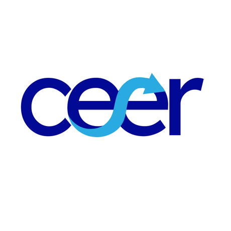

Dashboard del CEER
Series históricas macro, monetarias y financieras, con gráficos, filtros y descarga (BCRA, FRED, BLS, Ámbito).
Abrir el dashboard
Queremos facilitar el acceso a la economía a quienes no se especializan en ella, sin bajar el nivel. Aspiramos a ser intermediarios entre quienes escriben la literatura y los programas económicos y quienes los viven y buscan comprenderlos.
Últimos datos oficiales del INDEC y el BCRA, con el período al que corresponde cada uno
Cargando indicadores oficiales…
Datos para explorar y un juego para ponerse en el lugar del Banco Central
Series históricas macro, monetarias y financieras, con gráficos, filtros y descarga (BCRA, FRED, BLS, Ámbito).
Abrir el dashboardUn juego interactivo del CEER: ponete en el lugar de la autoridad monetaria y tomá vos las decisiones de política del banco central.
JugarInformes de coyuntura y temáticas especiales del CEER